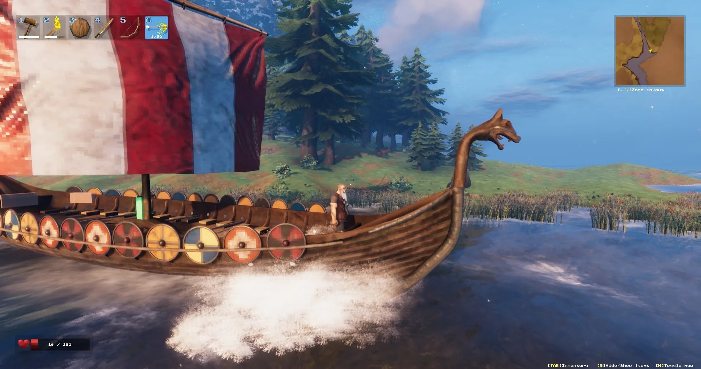

Valheim Sailing & Boats Guide 2026
Master the seas of Valheim. Complete comparison of all four ships (Raft, Karve, Longship, Drakkar), wind mechanics explained, tacking strategy, Ocean biome threats, serpent hunting tips, and how to use Moder's Forsaken Power for permanent tailwind.

1. All 4 Ship Types Compared
| Ship | Materials | HP | Storage | Paddle | Half Sail | Full Sail | Best Use |
|---|---|---|---|---|---|---|---|
| Raft | 20 Wood, 6 Leather, 6 Resin | 300 | 0 | 1.5 | 2.2 | 3.1 | Rivers only — do NOT take into Ocean |
| Karve | 30 Fine Wood, 10 Deer Hide, 20 Resin, 80 Bronze Nails | 500 | 4 | 2.0 | 3.9 | 7.0 | Coastal exploration, first Ocean trips |
| Longship | 40 Fine Wood, 40 Ancient Bark, 10 Deer Hide, 100 Iron Nails | 1000 | 18 | 2.5 | 5.0 | 9.75 | Ocean travel, metal hauling, serpent hunting |
| Drakkar | Late-game Ashlands materials | 3000 | 32 | 2.5 | 4.65 | 8.9 | Ashlands/Deep North exploration |
Speeds shown in meters/second. The Raft is borderline unusable in Ocean — wait for the Karve at minimum.
2. How to Sail — Controls & Wind
Basic Controls
- W / S — Cycle through speeds: Reverse → Stop → Paddle → Half Sail → Full Sail
- A / D — Steer left/right (rudder sticks — re-center it or you'll circle!)
- Interact with the rudder at the back of the boat to take control
Speed Modes
- Paddle (1st forward): Works regardless of wind. Slow but reliable. Use for docking, fog, rocks, and sailing into headwinds.
- Half Sail (2nd forward): Requires favorable wind. Good for coastal navigation and rough weather.
- Full Sail (3rd forward): Maximum speed with favorable wind. Use in open Ocean. Reduces turning ability.
3. Wind Mechanics & Tacking
The wind indicator is below the minimap. Golden/bright area = wind in your favor (can use sails). Grey/black area = wind against you (must paddle). Wind changes direction every few minutes. Crosswind to tailwind all work roughly the same — optimal dead-center tailwind is only ~3% faster.
Tacking (Sailing Against Wind)
Zigzag left and right of the wind direction — sail at a 45° angle, then turn 90° and repeat. This lets you use half/full sail instead of slow paddling. Modest speed gain over paddling but worth it for long crossings. Or just paddle — it's simpler.
4. Ocean Biome Dangers
| Threat | Risk Level | How to Handle |
|---|---|---|
| Sea Serpents | 🔴 High | Spawn more often during storms and at night. Flee if unprepared (they don't stray far). Fight with Finewood Bow + best arrows. Serpent meat sinks if the serpent dies over deep water — drag it to shore first. |
| Storms | 🟠 Medium | Massive waves can capsize small boats (especially Karve). Reduce to Half Sail or paddle. Waves deal impact damage at high speed. |
| Deathsquitos (near Plains) | 🟡 Medium | Don't sail too close to Plains shorelines. Deathsquitos can chase you far out to sea. |
| Rocks & Shallows | 🟡 Medium | Reduce to paddle speed near shore, rocks, or in fog. Ramming rocks at full sail deals serious damage. |
5. Sea Serpent Hunting Guide
Sea Serpents spawn in the Ocean biome, more frequently during storms and at night. They drop Serpent Meat (for Serpent Stew — one of the best early-game foods) and Serpent Scales (for the Serpent Scale Shield).
Hunting Strategy
- Use a Longship (Karve is too fragile).
- Bring a Finewood Bow or Draugr Fang with Frost or Fire Arrows.
- When a serpent spawns, sail toward it at half speed. Stop to fire arrows.
- CRITICAL: Drag the serpent to shallow water near a coastline before killing it. Serpent Meat and Scales sink in deep water and are lost forever.
- Alternative: Use the Abyssal Harpoon to drag a serpent onto land, though this is high-risk.
6. Sailing Tips & Advanced Techniques
Was this guide helpful?